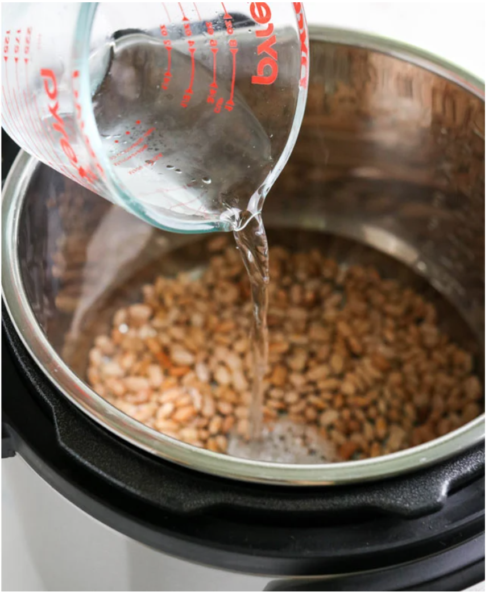
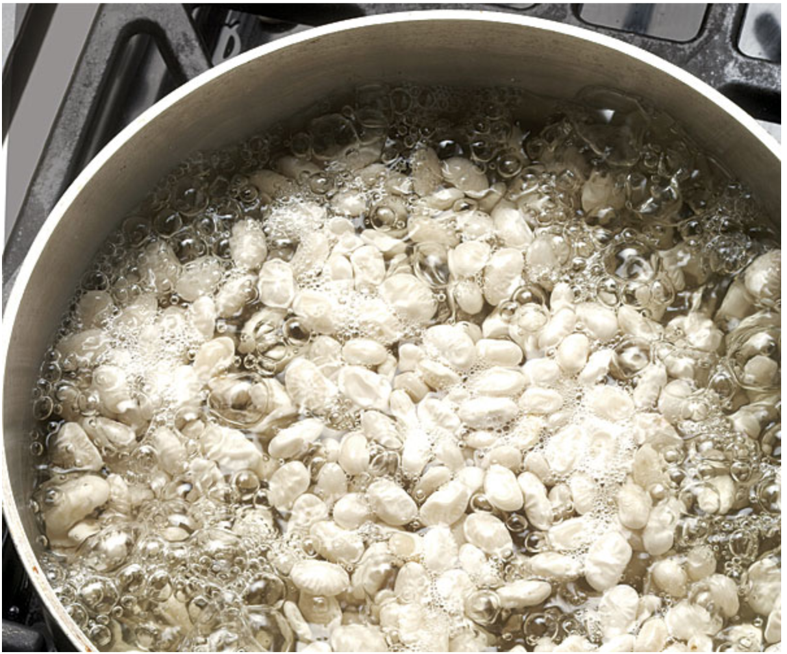

How to prepare beans
01
Clean The Beans
- Rinse the beans in cold water
- Remove any debris if present
- Wash the beans with cold water
- Drain the water from the beans


02
Prepare The Beans
- Add beans to a large pot
- Add seasonings
- Fill the pot with luke warm water
03
Cook The Beans
- Bring the beans to a rapid boil
- After 2 mins reduce the heat
- Simmer the beans for 1 1/2 to 2 hours
- Stir the beans while simmering
- Feel the beans to tell when they are full cooked
- Beans will crush easily inside of a spoon when done
